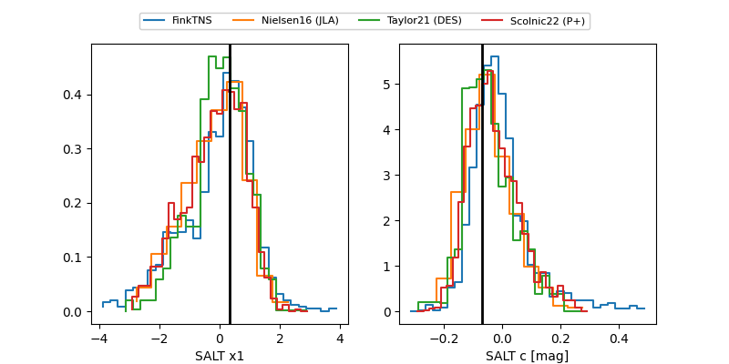

FINK: ZTF25abogfzc
Lasair: ZTF25abogfzc
ALeRCE: ZTF25abogfzc
TNS: 2025wwd
YSE: 2025wwd
ZTF25abogfzc (ztf,fink)
2025wwd (tns,yse)
ATLAS25lqb (atlas)
PS25hqd (panstarrs)
equatorial (ra, dec) = (69.2213,+21.26458)
galactic (l, b) = (177.2002,-17.10155)

last atlasc=19.36, atlaso=19.22, ztfg=19.75, ztfr=19.24
1 atlasc, 2 atlaso, 5 ztfg, 5 ztfr detections